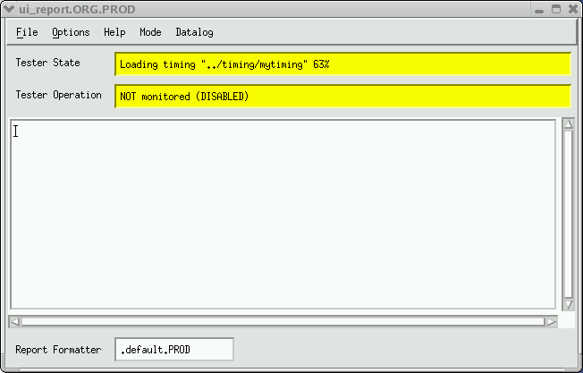

Loading Progress Meter
When a single file (excluding the pattern master file) is being loaded, the Test State field in the report window shows the file name plus the percent of the file currently loaded. The figure below shows an example of the Progress Meter indicating the status for timing files loading.
When a pattern master file is being loaded, the report window shows the updated loading progress of the vector file currently being loaded, plus progress information specific to the vector file group; the number of files contained in the master file is shown, as well as the completion status of the current file.
The Progress Meter shows the loading progress updates for the following types of V93000 files.
- Setup file
- Pin configuration file
- Level file
- Timing file
- Vector file
- Analog control file
- Waveform file
- Routing set file
- Pin attribute file
- File Group
- Pattern master file
